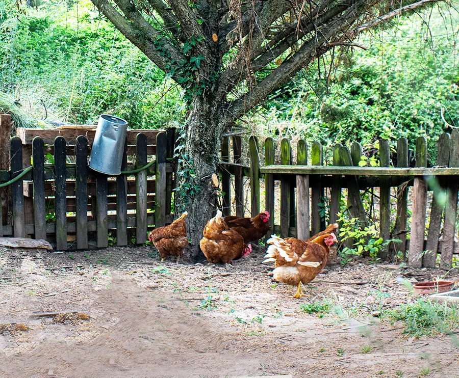

Antiguo Granero
Todo el espacio del antiguo granero para tu grupo de 7 personas, con total intimidad. Hay un sofá cama doble adicional por si lo necesitáis.
Ver alojamiento →Turismo rural y bienestar
En Mas Collades los huéspedes duermen en el Antiguo Granero, con intimidad total para su grupo, y comparten la vida de la finca: el huerto, las gallinas, la leña y el silencio de la montaña del Bages.
La vida en Mas Collades
Aquí no hay recepción ni horarios rígidos. Hay una casa grande de piedra, gente que la comparte y la naturaleza alrededor.
Baja al huerto a ver si hay algo que recoger y saluda a las gallinas por la mañana.
Hay leña cortada lista para usar, y también puedes recoger del bosque para el invierno que viene.
Espacios para parar, respirar y practicar mindfulness en plena naturaleza.
Cada grupo del Antiguo Granero recibe una botella de la DO Pla de Bages y puede vivir el "Viatge al passat".

Desde 1683
El primer documento del mas Collades data del 24 de marzo de 1683. Desde entonces, la casa ha pasado de manos de los Collades a los Pons, ha vivido el auge del viñedo y la filoxera, y ha sido restaurada en el siglo XX. Hoy abre sus puertas como refugio de turismo rural.
Experiencia estrella

Visita guiada a la barraca de viña antigua de la masia (piedra seca única en el territorio), recorrido por el celler histórico del siglo XVII en la casa principal y cata de vinos DO Pla de Bages con nuestro sommelier Christian Betoret.
Ver la experiencia completa →Alojamiento
Todo el espacio del antiguo granero para tu grupo de 7 personas, con total intimidad. Hay un sofá cama doble adicional por si lo necesitáis.
Ver alojamiento →
Zona de verano con barbacoa, comedor exterior y piscina entre los campos.
Ver alojamiento →
Huerto, gallinas, leña y piscina: la experiencia de vivir en el campo, a tu ritmo.
Ver alojamiento →"Som lo que pensem, som lo que sentim, som lo que vivim."
Mas Collades es un proyecto de vida: recuperar la masia pieza a pieza, poco a poco, y no dejar que se pierda la historia de cómo se vivía antes.